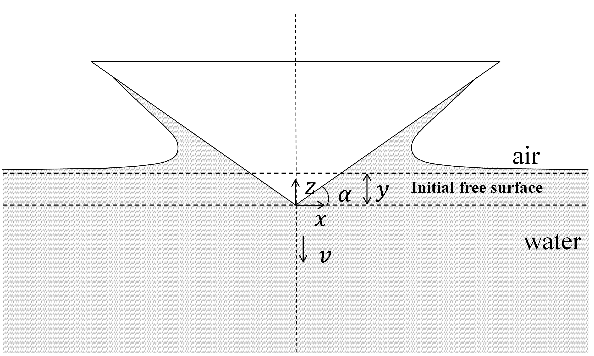

Numerical and theoretical study on the varying speed impact of wedge bodies on a water surface

Abstract
The varying speed impact of wedge bodies on a water surface is studied numerically and theoretically to provide a fast and accurate prediction of the pressure on the wedge surface and the motion of wedge bodies during the free impact, which can be a 2D model for the strip theory or 2D+t strategy. The fluid is assumed to be incompressible, inviscid, with negligible gravity effect and surface tension effect. The computational fluid dynamics (CFD) method is based on the volume of fluid (VOF) method and global moving mesh (GMM) method. Various cases of a varying speed impact are shown for the CFD method, and a linear relationship between the pressure coefficient Cp and a dimensionless variable K is observed. To clearly explain the linear relationship between Cp and K, we follow the potential theory to derive the Cp expression based on several assumptions on the free surface drawn from the CFD results. The Cp expression and the motion of wedge bodies for a free impact derived from it are considered as an approximate solution for a varying speed impact. The approximate solution is compared with the existing analytical models and the published experimental data. The approximate solution can work well for different deadrise angles, while the existing analytical models can only be used for small deadrise angles. Good agreement is also obtained between the approximate solution and the experimental test results, including the time history of wedge acceleration and the pressure on the wedge surface.
Read the published article ↗